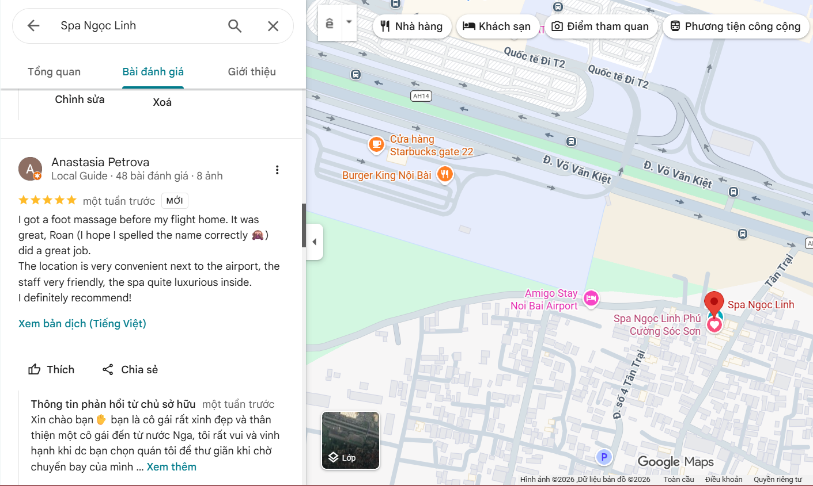
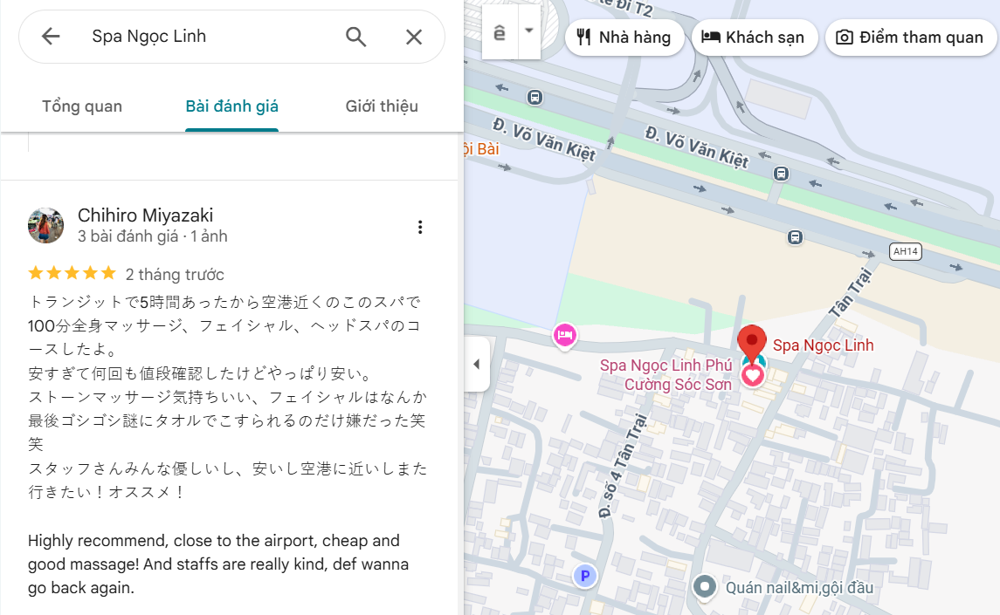
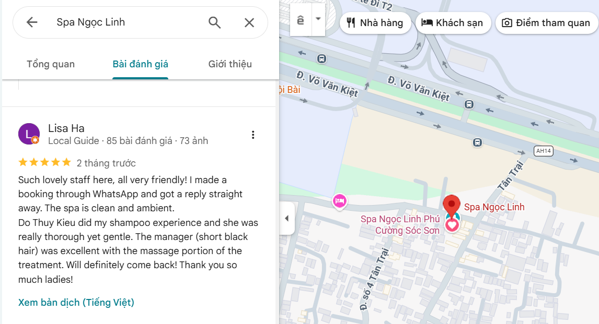
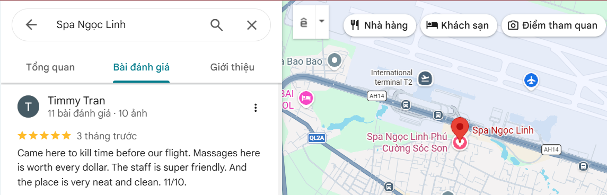
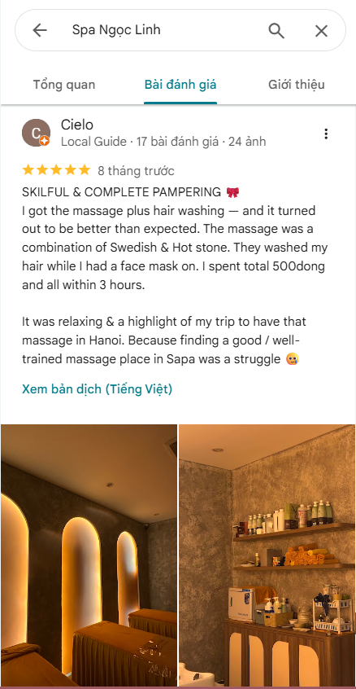
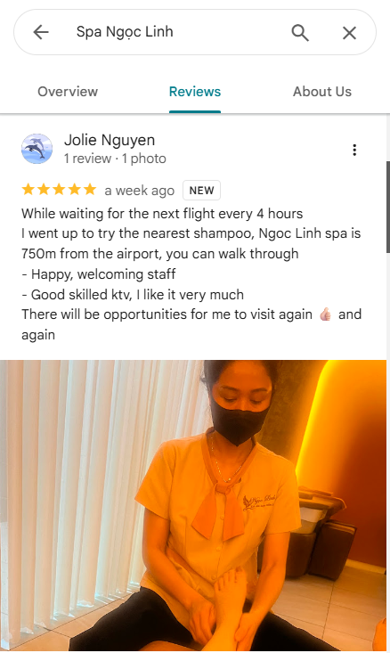
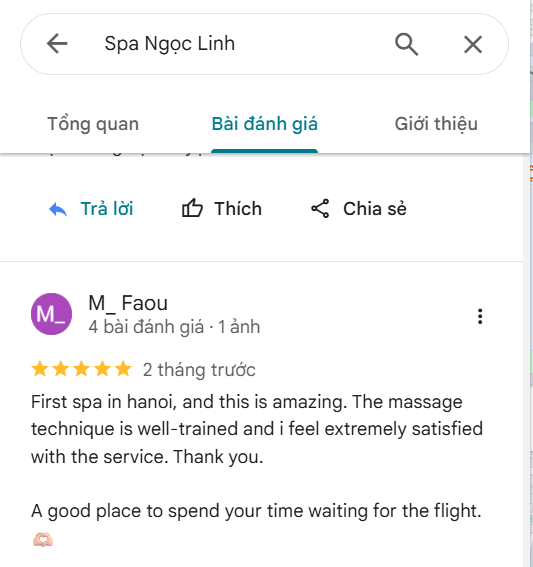

Looking for airport massage near Hanoi Airport?
"Ngoc Linh Massage & Spa" is just 5 minutes from Terminal 2, offering a quiet and comfortable place to unwind before or after your flight.
⭐ 4.9/5 from 250+ Google reviews
(Tap image to zoom)







How far are you from Noi Bai International Airport (HAN)?
We are about 5 minutes from Terminal 2 of Hanoi Airport.
Is it safe to visit before my flight?
Yes. Many travelers come before departure to avoid traffic delays in the city.
Do you provide airport transportation?
Yes. Complimentary one-way airport pick-up or drop-off is available for eligible spa packages.
What treatments are most popular with travelers?
Body massage, Foot massage, Head wash scalp & Facial massage, and our VIP Combo are among the most popular choices for travelers.